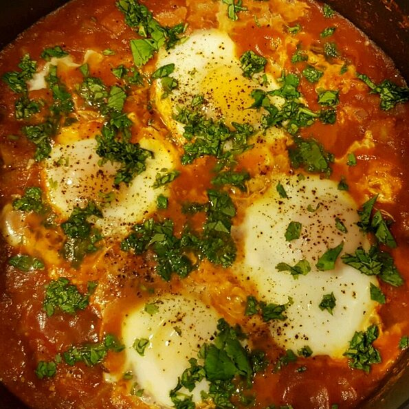

Shakshuka

This is a great, quick, flavorful dish I learned while living in southern Israel. You can add spices to taste, but for the first go, try it this way. Makes 2 hearty servings. Serve with bread to sop up the sauce.
Ingredients
- 2 teaspoons vegetable oil
- 2 cloves garlic, minced
- 1 onion, chopped
- 1 zucchini, chopped
- 1 (10 ounce) can crushed tomatoes
- 4 dashes hot pepper sauce (such as Tabasco®)
- 4 eggs
- 1 pinch salt
Steps
-
Heat the vegetable oil in a skillet over medium heat. Stir in the garlic and onion; cook and stir until the onion has softened and turned translucent, about 5 minutes. Stir in zucchini; cook and stir for 5 minutes. Mix in the crushed tomatoes and hot pepper sauce. Cover and simmer for 10 minutes.
-
Make 4 wells in the tomato mixture, and crack the eggs into each well. Do not stir. Cover and cook until eggs are desired consistency, about 3 minutes for soft yolks. Carefully remove the eggs from the skillet and serve with the tomato sauce.